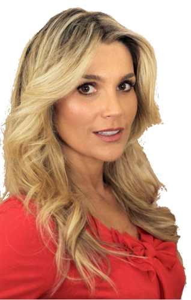
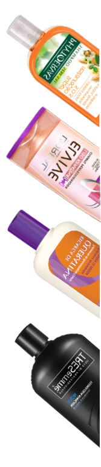

Flavia
Alessandra
Flavia
Alessandra


A amante da queratina!
Veja
O cabelo de Flávia é liso, originalmente castanho-claro, está mais escuro, e com microluzes quase imperceptíveis. “É um efeito supermoderno. Parece que é só de uma cor, mas existem luzes feitas milimetricamente no contorno do rosto e em algumas pontas, para dar luminosidade. Usei tonalizante loiro-escuro dourado- acinzentado e loiroescuro-dourado-acobreado para proporcionar somente nuances de brilho”, revela. Ela está usando mega-hair e precisa de hidratações constantes. “Como não tenho muito tempo, faço tratamento rápido à base de queratina, de meia hora ou 45 minutos, para devolver brilho e maciez aos fios”, explica atriz.
O cabelo de Flávia é liso, originalmente castanho-claro, está mais escuro, e com microluzes quase imperceptíveis. “É um efeito supermoderno. Parece que é só de uma cor, mas existem luzes feitas milimetricamente no contorno do rosto e em algumas pontas, para dar luminosidade. Usei tonalizante loiro-escuro dourado- acinzentado e loiroescuro-dourado-acobreado para proporcionar somente nuances de brilho”, revela. Ela está usando mega-hair e precisa de hidratações constantes. “Como não tenho muito tempo, faço tratamento rápido à base de queratina, de meia hora ou 45 minutos, para devolver brilho e maciez aos fios”, explica atriz.
O cabelo de Flávia é liso, originalmente castanho-claro, está mais escuro, e com microluzes quase imperceptíveis. “É um efeito supermoderno. Parece que é só de uma cor, mas existem luzes feitas milimetricamente no contorno do rosto e em algumas pontas, para dar luminosidade. Usei tonalizante loiro-escuro dourado- acinzentado e loiroescuro-dourado-acobreado para proporcionar somente nuances de brilho”, revela. Ela está usando mega-hair e precisa de hidratações constantes. “Como não tenho muito tempo, faço tratamento rápido à base de queratina, de meia hora ou 45 minutos, para devolver brilho e maciez aos fios”, explica atriz.